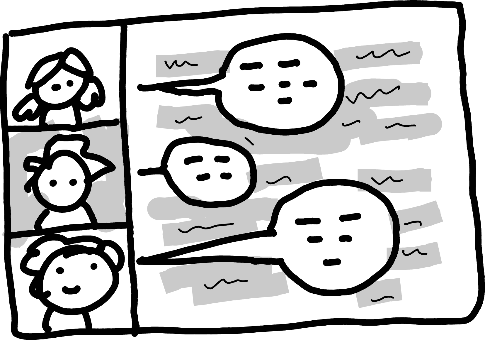

Title of Example Chapter (as will appear on top h1 header and in table of contents)
markdown, example
Your first top-level section
A subsection
This is an example subsection, starting with ###.
Quarto Markdown quick examples
Citations
An example citation (Williams 2010). You can also cite Williams (2010) in the text, without the brackets.
This is a reference to a chapter of a book (Sharifi, Qu, and King 2026). You can find it in references.bib; it uses the @inbook type.
The “References” section will be populated automatically at the bottom.
Footnotes
This is some text with a footnote1.
URL links
Use link text to include URL links; please refer to the accessibility guidance in the book submission guidelines.
If it is absolutely necessary to display the full URL in the text, use <...>: https://quarto.org
Images

Putting some content in a box
References
Write the content of your footnote here.
If you need a multiline footnote, indent the following lines with 4 spaces…
…like this. Everything indented will be part of the footnote.↩︎